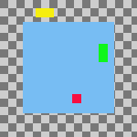
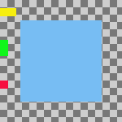
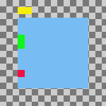
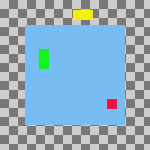
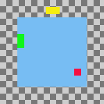
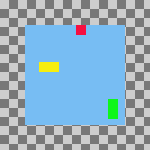
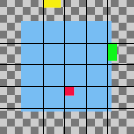

Com o comando você pode posicionar as camadas visíveis de forma muito precisa (aquelas marcadas co o ícone de “olho”). este grau de precisão é especialmente útil quando você está trabalhando em animações, ou“sprites” para uso na Web, quando tipicamente existem muitas camadas pequeninas. Clicar em exibe um diálogo que permite que você escolha como as camadas serão alinhadas.
-
You can access this command from the main menu through → . There is no default keyboard shortcut.
![[Nota]](images/note.png)
Nota If the image holds a single layer only, you get a message from GIMP telling that there must be more than one layer in the image to execute the command.
The examples in the Description of the “Align Visible Layers” dialog section all use the same starting image. The image contains four layers. The order of those layers from top to bottom is as follows:
-
Green, vertical rectangle (top layer)
-
Yellow, horizontal rectangle
-
Red, small square
-
Blue, larger square (bottom layer)

The command aligns layers based on their boundaries. In the example image, each layer's boundary is adjusted to match the perimeter of the shape in that layer. For information about how to adjust a layer's boundary, see Layer Boundary Size. You can also use a command such as Crop Layers to Content to automatically adjust a layer's boundary.
|
|
Nota |
|---|---|
|
In the examples, the Ignore the bottom layer even if visible checkbox is left checked. The bottom layer, which is the larger blue square, is then not affected by any of the alignment operations. |
- Horizontal style, Vertical style
-
Essas opções controlam como as camadas serão posicionadas em relação umas as outras. Você pode escolher:
-
Nenhum: Não haverá mudanças na posição horizontal ou vertical (respectivamente)
-
Coletar: as camadas visíveis serão alinhadas na tela de pintura, na forma que for determinado pelas opções de Base horizontal e Base vertical. Se você selecionar uma Base horizontal de Extremidade direita, as camadas podem desaparecer da tela de pintura. Você poderá recupera-las aumentando a tela de pintura. Se você habilitar a opção de Usar a camada do fundo (invisível) como a base, as camadas serão alinhadas no canto superior esquerdo da camada do fundo.
Figura 16.73. Example Use of Collect: Layers Aligned to Left Edge of the Canvas

Imagem original

Horizontal style: Collect , Horizontal base: Left edge.
As camadas foram movidas horizontalmente de forma que seus cantos esquerdos estão alinhados com a borda esquerda da tela de pintura.
Figura 16.74. Example Use of Collect: Layers Aligned to Left Edge of the Bottom Layer
Imagem original

Same parameters as the previous example, but with the Use the (invisible) bottom layer as the base checkbox checked.
As camadas foram movidas horizontalmente de forma que sua borda ficou alinhada com a borda da camada do fundo.
-
Fill (left to right); Fill (top to bottom): The visible layers will be arranged left to right (or top to bottom) on the canvas according to their order in the layer stack.
The top layer in the stack will be aligned with the layer that currently has the leftmost (or uppermost) position on the canvas. The bottom layer in the stack will be aligned with the layer that currently has the rightmost (or bottommost) position on the canvas. All other visible layers will be evenly distributed between those two positions according to their order in the layer stack.
Your choice of Horizontal base (or Vertical base) determines how the top and bottom layers are aligned with their respective target layers. For example, if you choose Right edge as the Horizontal base, the right edge of the top and bottom layers will be aligned with the right edge of their target layers.
Nota If the Use the (invisible) bottom layer as the base checkbox is checked, the top layer in the stack will be aligned with the current position of the bottom layer in the stack, instead of the leftmost (or uppermost) layer on the canvas.
Figura 16.75. Example Use of Fill: Layers Filled Left to Right
Imagem original

Horizontal style: Fill (left to right), Horizontal base : Left edge.
The top layer in the stack, the green one, was aligned with the layer that had the leftmost position on the canvas. The bottom layer in the stack, the red one, was aligned with the layer that had the rightmost position on the canvas. The yellow layer is placed between the other two.
Figura 16.76. Example Use of Fill: Layers Filled Left to Right With the Bottom Layer as the Base
Imagem original

Same parameters as the previous example, but with the Use the (invisible) bottom layer as the base checkbox checked.
The top layer in the stack, the green one, is aligned with the left edge of the base layer. The bottom layer in the stack, the red one, was aligned with the layer that had the rightmost position on the canvas. The yellow layer is placed between the other two.
-
Preencher (direita para esquerda); Preencher (baixo para cima): Essas configurações funcionam da mesma forma que as descritas acima, mas o preenchimento acontece na direção oposta.
Figura 16.77. Example Use of Fill: Layers Filled Bottom to Top With the Bottom Layer as the Base
Imagem original

Vertical style: Fill (bottom to top), Vertical base : Top edge, Use the (invisible) bottom layer as the base: checked.
The bottom layer in the stack, the red one, is aligned with the top edge of the base layer. The top layer in the stack, the green one, was aligned with the top edge of the of the layer that had the lowest position on the canvas. The yellow layer is placed between the other two.
Deve haver ao menos 3 camadas visíveis na imagem para usar as opções de “Preencher”.
-
Snap to grid: The visible layers will be aligned with a grid. Use the Grid setting to define the spacing of the grid. The base that you select will be aligned with its closest grid line. For example, if you select Left edge from the Horizontal base list, the left edge of each layer will be aligned with the grid line that is closest to the layer's left edge.
In the following example, the image grid is turned on and its spacing set to the same value as the Grid setting. This is only to help demonstrate the effect of the Snap to grid option. You don't need to turn on the image grid and none of its settings are used when you align layers.
Figura 16.78. Example Use of Snap to Grid: Layers Aligned to Top Left Corner of Grid Squares

Original image with an added 30 pixel image grid

Horizontal style: Snap to grid, Horizontal base: Left edge, Vertical style : Snap to grid, Vertical base: Top edge , Grid: 30
Each layer other than the base is aligned with the top left corner of a 30 by 30 pixel grid square.
-
- Grade
-
If you choose the Snap to grid option from either the Horizontal style or Vertical style lists, the Grid setting defines the spacing of the grid to which layers are aligned.